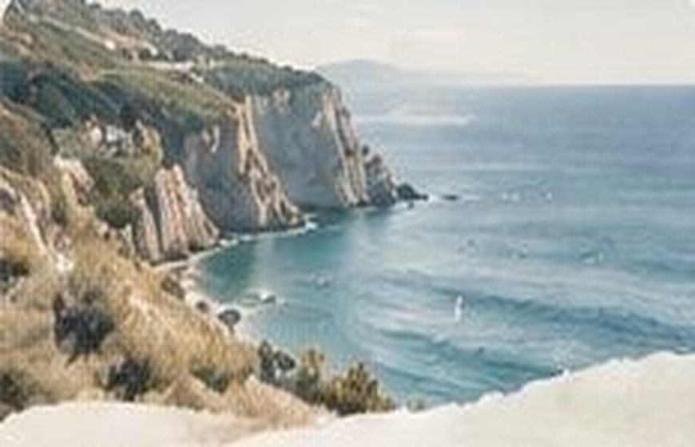
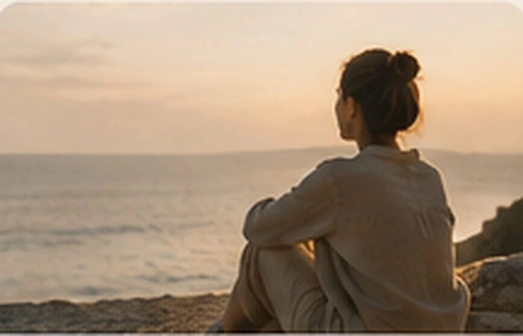
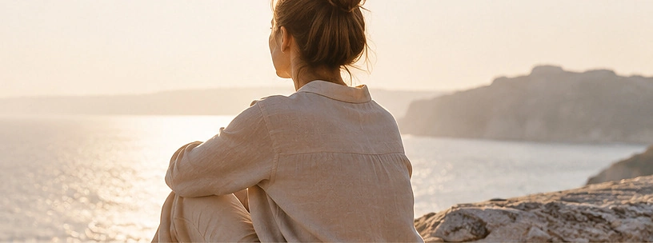

Когда привычные ориентиры перестают работать
Иногда в жизни наступает момент, когда мы больше не можем ответить на вопрос «Чего я хочу?». То, что раньше казалось важным, больше не вызывает прежнего отклика. Чем сильнее требуем от себя определённости, тем труднее услышать собственные желания. Не всегда неопределённость означает, что мы сбились с пути. Иногда прежние ответы просто перестали быть нашими.
Материалы и практики

Что меня притягивает
Собери изображения, цвета, фактуры и предметы, которые вызывают интерес. Не обязательно понимать почему. Создай композицию. Что объединяет элементы? Какие ощущения они вызывают? Иногда желания сначала проявляются через образы.
Продолжить практику →
Зачем это упражнение: чтобы в собственном темпе исследовать переживания через действие, образы или слова — без требования получить правильный результат.
- Подготовь удобное место и материалы, названные в описании. Можно остановиться в любой момент.
- Выполни упражнение, описанное выше, не торопясь и замечая, какие решения хочется принимать по ходу.
- Посмотри на получившееся. Что оказалось важным? Что хочется сохранить, изменить или оставить без ответа?

Если бы мне не нужно было знать ответ
Продолжи фразы: «Мне интересно попробовать…», «Я давно хотела, но откладывала…», «Если бы я могла не бояться ошибиться, я бы…», «Мне хотелось бы, чтобы в моей жизни стало больше…», «Я больше не хочу…». Пока не нужно ничего решать.
Продолжить практику →
Зачем это упражнение: чтобы в собственном темпе исследовать переживания через действие, образы или слова — без требования получить правильный результат.
- Подготовь удобное место и материалы, названные в описании. Можно остановиться в любой момент.
- Выполни упражнение, описанное выше, не торопясь и замечая, какие решения хочется принимать по ходу.
- Посмотри на получившееся. Что оказалось важным? Что хочется сохранить, изменить или оставить без ответа?

Несколько возможных дорог
Выбери три предмета, каждый обозначает одно возможное направление. Расположи их перед собой. Что привлекает, что вызывает сомнения? Какой предмет сегодня хочется немного приблизить? Не нужно делать окончательный выбор.
Продолжить практику →
Зачем это упражнение: чтобы в собственном темпе исследовать переживания через действие, образы или слова — без требования получить правильный результат.
- Подготовь удобное место и материалы, названные в описании. Можно остановиться в любой момент.
- Выполни упражнение, описанное выше, не торопясь и замечая, какие решения хочется принимать по ходу.
- Посмотри на получившееся. Что оказалось важным? Что хочется сохранить, изменить или оставить без ответа?
Интерактивная заметка
Здесь можно записать свои мысли. Нажми «Скачать заметку», чтобы сохранить её только на своём устройстве. Записи не отправляются на сайт.
Индивидуальная поддержка
На индивидуальной встрече можно исследовать переживания в собственном темпе, без необходимости приходить с готовыми ответами. Поддержка строится вокруг твоей ситуации и потребностей.
Познакомиться со специалистами →Группы и встречи
«В поисках своего направления» — концепция поддерживающей арт-терапевтической группы. Через творчество, работу с материалами и разговор участники могут исследовать свой опыт. Даты и условия участия пока не определены.
Подробнее о группах →В завершение
Не обязательно видеть весь путь, чтобы начать двигаться. Иногда достаточно одного маленького шага.